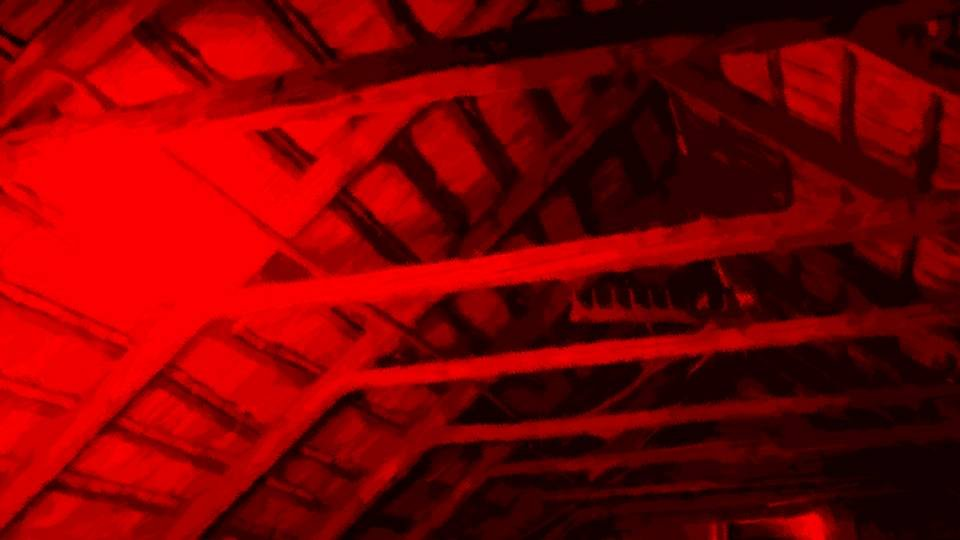
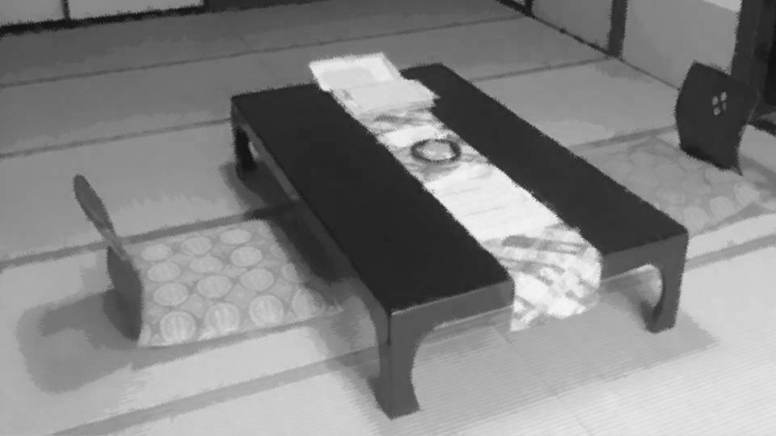
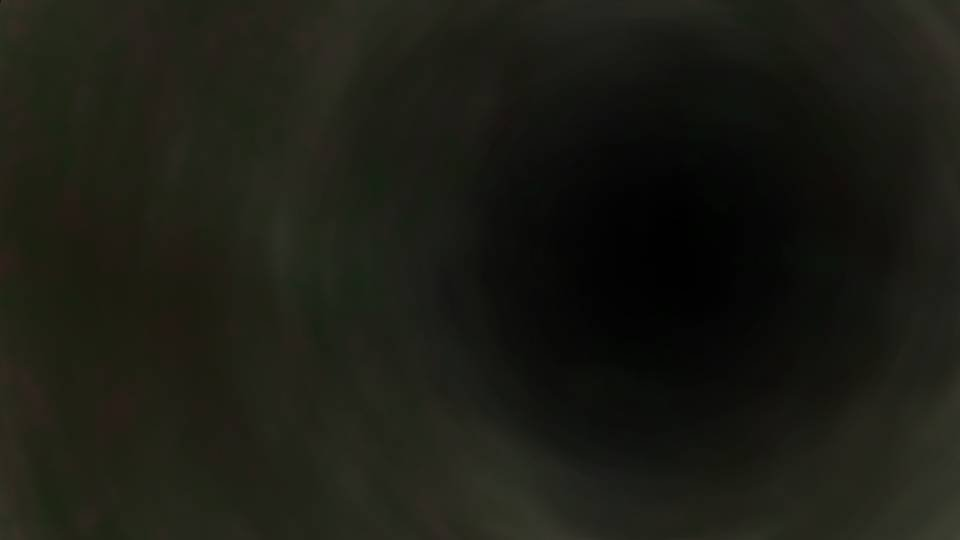
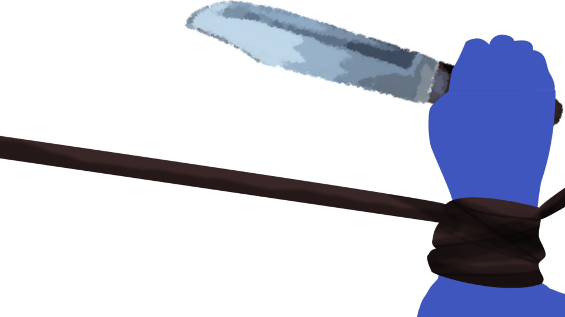
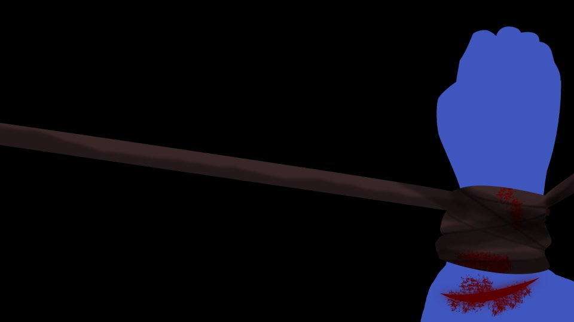
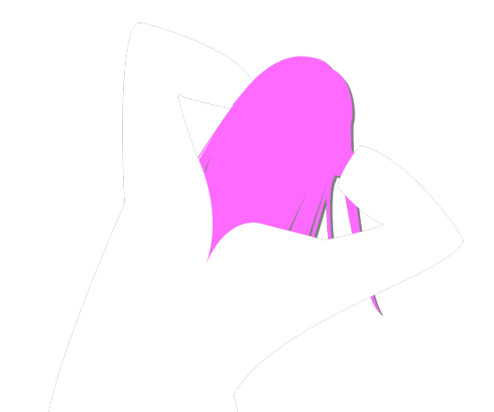

翠眼～ネクロマンサー～

『猛き音』が鳴り響く。
今まで聞いたこともないような、不気味で大きな音。
私が真相を知ってしまうと……死月妖花が動く。
死月妖花が動くということは、死体が動く。
死体が動くということは……。
今まで聞いたこともないような、不気味で大きな音。
私が真相を知ってしまうと……死月妖花が動く。
死月妖花が動くということは、死体が動く。
死体が動くということは……。
やっと呪殺事件の真相が分かった。
 video: 豊岳桜.wmv
video: 豊岳桜.wmv呪殺事件は、死月妖花が死体を操って死者を増やしていたのだ。
死者が増えれば、苗床が増える。
苗床が増えれば、減ってしまった桜を増やし、成長や繁殖を促す。
呪殺事件とは、死者が生者をあの世に連れて行く事件―― まさに死神による生者の連行だった。
死者が増えれば、苗床が増える。
苗床が増えれば、減ってしまった桜を増やし、成長や繁殖を促す。
呪殺事件とは、死者が生者をあの世に連れて行く事件―― まさに死神による生者の連行だった。
video: 豊岳桜.wmv死月妖花はその姿を見せず、ひたすら桜に擬態して生き延びてきたのだから、その死月妖花を知った私が今年のターゲットになるだろう。
なぜなら、その擬態を見破る者は脅威であり、闇に葬るしかないからだ。
『猛き音』が鳴った以上、私の元に死体が来る……！
それが朽ち果てたゾンビのようにおぞましい姿なのか、それとも人の造形すらなくした姿なのか。
なぜなら、その擬態を見破る者は脅威であり、闇に葬るしかないからだ。
『猛き音』が鳴った以上、私の元に死体が来る……！
それが朽ち果てたゾンビのようにおぞましい姿なのか、それとも人の造形すらなくした姿なのか。
急いで……急いでメモを残さないといけない！
それも、自分で何を書いているのか見てはダメだ！
私の五感はすべて死月妖花に筒抜け――！
いや、でも私の脳を読み取るのなら、何をしても手遅れなのでは……！
それも、自分で何を書いているのか見てはダメだ！
私の五感はすべて死月妖花に筒抜け――！
いや、でも私の脳を読み取るのなら、何をしても手遅れなのでは……！
落ち着け……！
一か八かではあるけど、死月妖花がジャックできるのは五感だけで、思考までは読み取れないと推測する。
なぜなら、私がこの本を読み終わるまで、怪音はならなかったからだ。
もし私の考えていることまで分かるのであれば、この本を見つけた時点で怪音が鳴るはずだ。
一か八かではあるけど、死月妖花がジャックできるのは五感だけで、思考までは読み取れないと推測する。
なぜなら、私がこの本を読み終わるまで、怪音はならなかったからだ。
もし私の考えていることまで分かるのであれば、この本を見つけた時点で怪音が鳴るはずだ。

スマホを取り出し、音声録音モードにする。
これで私の身に何かが起これば、スマホにその情報が残る。
そして、今見知ったことを急いでメモにする。
もともと字の下手な私が字を見ずに書くと、どんな象形文字になるか分からないが、それでも何も残さないよりはマシだ。
これで私の身に何かが起これば、スマホにその情報が残る。
そして、今見知ったことを急いでメモにする。
もともと字の下手な私が字を見ずに書くと、どんな象形文字になるか分からないが、それでも何も残さないよりはマシだ。

これをあなたが読んでいるということは、私は行方不明なのでしょうね。
サスペンスドラマにありそうな書き出しって思われるかもしれませんが、今まさにそのような状態です。
私は見張られています。
遠くから、近くから。
いや、東京にいたときから、私は見張られていたのだと思います。
サスペンスドラマにありそうな書き出しって思われるかもしれませんが、今まさにそのような状態です。
私は見張られています。
遠くから、近くから。
いや、東京にいたときから、私は見張られていたのだと思います。
わざわざメモを書き起こすのには理由があります。
五島ちゃんの言っていた『何者か』の正体についにたどり着きました。
『彼女』は私の五感を通して全てを見通すことができるようです。
しかし、『彼女』は私の思考まで読み取ることはできないようです。
五島ちゃんの言っていた『何者か』の正体についにたどり着きました。
『彼女』は私の五感を通して全てを見通すことができるようです。
しかし、『彼女』は私の思考まで読み取ることはできないようです。
今私は、視線を別の方に向けてこのメモを書いています。
これなら、『彼女』がこのメモを私を通して見ることはできません。
読みづらいと思いますが、ご容赦下さい。
これなら、『彼女』がこのメモを私を通して見ることはできません。
読みづらいと思いますが、ご容赦下さい。
五島ちゃんの言っていた『何者か』の名は『死月妖花』。
数万年も前からこの荒田集落に根付いている巨大な生物です。
彼女はナラタケという菌類に分類される生物だそうで、他の生物に胞子を植えつけ大きく成長していきます。
つまり、死月妖花とは寄生生物です。
桜に見えるものは、実は彼女の子実体です。
数万年も前からこの荒田集落に根付いている巨大な生物です。
彼女はナラタケという菌類に分類される生物だそうで、他の生物に胞子を植えつけ大きく成長していきます。
つまり、死月妖花とは寄生生物です。
桜に見えるものは、実は彼女の子実体です。
予知能力や呪殺、お母さんの死、私の翠眼。
これらは全て死月妖花が生き延びるためだけに行われている、ただの繁殖行為に過ぎません。
野生生物が行っている繁殖行為が、私たち人間にとっては呪いや超常現象に見えただけ、という話です。
これらは全て死月妖花が生き延びるためだけに行われている、ただの繁殖行為に過ぎません。
野生生物が行っている繁殖行為が、私たち人間にとっては呪いや超常現象に見えただけ、という話です。
幸い、彼女には知性がありません。
知性はないのに、死体を使って私たちを惑わす方法を身につけているようです。
知性はないのに、死体を使って私たちを惑わす方法を身につけているようです。
念のため、私の携帯でずっとここの音声を録音しています。
この手紙を見た人は、携帯の音声の聞いてください。
パスワードやロックはかけていません。
この手紙を見た人は、携帯の音声の聞いてください。
パスワードやロックはかけていません。
――字を確認することはできないが、こう書いたつもりだ。
ああ、違う！ 知性の部分は書き間違えだ！
知性がないのではなく、ない知性を死体から取っているって話だ。
ああ、違う！ 知性の部分は書き間違えだ！
知性がないのではなく、ない知性を死体から取っているって話だ。
しかし書き直そうにも、それを見ることも許されない。
それに、私のところに死体がやってくるのだからもう時間もない。
誤った情報であるが、五島ちゃんたちが正しい情報を得る可能性に賭けるしかない。
それに、私のところに死体がやってくるのだからもう時間もない。
誤った情報であるが、五島ちゃんたちが正しい情報を得る可能性に賭けるしかない。

あとは、これを本の山の中に隠して、絶対に私の目に入らないようにしなければならない。
盗感の精度のほどは分からないが、もし私が書いた文字も手の動きだけで当たられるとしたらアウトだ。
いずれにしても、やれることはすべてやった。
後はもう、何も見ないように、何も聞かないようにしなければ！
盗感の精度のほどは分からないが、もし私が書いた文字も手の動きだけで当たられるとしたらアウトだ。
いずれにしても、やれることはすべてやった。
後はもう、何も見ないように、何も聞かないようにしなければ！
待って！ 大事なことが抜けているじゃないの！
この私の体質を治す方法が絶対にあるはずだ！
せめて、その文献だけでも探し出さないと……！
ドローガによる体質なら、ドローガの作り方を書き記した文献にそのことが載っているのでは……！？
この私の体質を治す方法が絶対にあるはずだ！
せめて、その文献だけでも探し出さないと……！
ドローガによる体質なら、ドローガの作り方を書き記した文献にそのことが載っているのでは……！？
…………
…………
…………
あった！

ドローガの精製法。
どこ……？ どこにある……！？
ひたすら本をめくり、古語に目を通すも、さすがに速読は難しい。
今こうやって調べていることも、死月妖花に筒抜けだ。
ぼやぼやしていたら、何が起こるか分からない。
どこ……？ どこにある……！？
ひたすら本をめくり、古語に目を通すも、さすがに速読は難しい。
今こうやって調べていることも、死月妖花に筒抜けだ。
ぼやぼやしていたら、何が起こるか分からない。
――！！ これだ！
最後のページに、祀耀735年、桔梗さん加筆の文。
ファルシフィカソを投与すると呪殺の兆候を抑制することができる。
ファルシフィカソ……？
最後のページに、祀耀735年、桔梗さん加筆の文。
ファルシフィカソを投与すると呪殺の兆候を抑制することができる。
ファルシフィカソ……？
今なら、秘密基地の地下で作っているはず。
明日ファルシフィカソを使う予定だから、必ずあるはずだ！
急いでこの体質を治さなくては……！
明日ファルシフィカソを使う予定だから、必ずあるはずだ！
急いでこの体質を治さなくては……！
…………！？
足音……？
靴ではなく、裸足で歩く音。
誰かが蔵に入った……！
足音……？
靴ではなく、裸足で歩く音。
誰かが蔵に入った……！
「誰！？」
敵対心むき出しの呼び声を上げ、2本所持しているナイフのうち、1本抜く。
人間なのか、それとも死体なのか。
敵対心むき出しの呼び声を上げ、2本所持しているナイフのうち、1本抜く。
人間なのか、それとも死体なのか。

さすがに生きた人間と土葬された死体の見分けくらいはつくだろう。
もし、異形の者であれば躊躇なく足の関節を狙い動きを封じ、首を切り落とす。
首を切り落とされて生きている生物などいるはずがない。
その理屈が死体に通用するとは思えないが……。
もし、異形の者であれば躊躇なく足の関節を狙い動きを封じ、首を切り落とす。
首を切り落とされて生きている生物などいるはずがない。
その理屈が死体に通用するとは思えないが……。
――不意に記憶がよみがえる。
首を切り落とされた生物―― その言葉に、私の記憶回路が反応した。
首を切り落とされた生物―― その言葉に、私の記憶回路が反応した。

お母さんは……
あの時、お父さんに……。
そうだ、まだあの時のことが全然解けていないじゃない……。
どうしてお母さんは自殺したの？
どうしてお父さんはお母さんの首を切ったの？
そうだ、まだあの時のことが全然解けていないじゃない……。
どうしてお母さんは自殺したの？
どうしてお父さんはお母さんの首を切ったの？
よみがえった光景で、ナイフを握る手の力がふっと緩む。
緩んだ手がナイフの重さを感じとり、私を我に返す。
緩んだ手がナイフの重さを感じとり、私を我に返す。
頭を振り、キッと前を睨む。

「茅萱……」
「おかあ……さん……？」
目の前に立っている人……。
それは……私がずっと会いたいと思っていた人……。
これは、幻……？
「おかあ……さん……？」
目の前に立っている人……。
それは……私がずっと会いたいと思っていた人……。
これは、幻……？
「ん……お母さん……！ どうして……？」
「茅萱……ごめんね…… お母さん、やっと帰ってこれたの」
「お母さん…… お母さん！」
白い天使のような装束をまとったお母さんの顔は、生前のようにきれいなままだった。
「茅萱……ごめんね…… お母さん、やっと帰ってこれたの」
「お母さん…… お母さん！」
白い天使のような装束をまとったお母さんの顔は、生前のようにきれいなままだった。
髪も私に似た明るい茶色、肌も年齢を思わせない透き通るような白。
そして、死んだことを悔やんでいるような、悲しみをうかがい知れる表情。
これが……死人だなんて、ありえない……。
ありえない…… ありえない…… ありえない……。
そして、死んだことを悔やんでいるような、悲しみをうかがい知れる表情。
これが……死人だなんて、ありえない……。
ありえない…… ありえない…… ありえない……。

「ありえないことが起こるのが、呪殺事件なんです」
騙されるな！ 騙されるんじゃない！
こんな甘美な誘惑に腑抜けている場合じゃない！
私のお母さんは……お母さんは、私の目の前で確かに死んだんだ！
これはお母さんとそっくりの姿をした偽者だ……！
きっと私を惑わすために、死月妖花が数ある遺体の中からお母さんを選んだのだ。
こんな甘美な誘惑に腑抜けている場合じゃない！
私のお母さんは……お母さんは、私の目の前で確かに死んだんだ！
これはお母さんとそっくりの姿をした偽者だ……！
きっと私を惑わすために、死月妖花が数ある遺体の中からお母さんを選んだのだ。
お母さんに対して、するどい眼光を向ける。
私がこんな目を向けるのは、おそらく2度目だ。
最初は私が翠眼によりお母さんに殺意を抱いた時―― 私はあの時と同じ目を向ける。
私がこんな目を向けるのは、おそらく2度目だ。
最初は私が翠眼によりお母さんに殺意を抱いた時―― 私はあの時と同じ目を向ける。
「…………」
私の視線に対して、お母さんの悲しそうな目が一瞬で死人のような目つきに変わった。
そしてお母さんの眼球がわずかに動く。
それは、別の方へ視線を向けた証拠。
その視線は…… 私の後ろに向けられている……？
私の視線に対して、お母さんの悲しそうな目が一瞬で死人のような目つきに変わった。
そしてお母さんの眼球がわずかに動く。
それは、別の方へ視線を向けた証拠。
その視線は…… 私の後ろに向けられている……？
「うぐ……！」
私の頭上で何かが弾ける。
頭に大きな衝撃が走り、足腰から力が抜ける。
背後から殴られた……！？
私の頭上で何かが弾ける。
頭に大きな衝撃が走り、足腰から力が抜ける。
背後から殴られた……！？
そんなバカな……！
さっきまで後ろには絶対に誰もいなかった……！
ダメだ……気を失うんじゃない……！
耐えろ……！
私はわずかに意識を保ったまま、床に倒れ込む。
しかし痛みはなく、身体の感覚もない。
さっきまで後ろには絶対に誰もいなかった……！
ダメだ……気を失うんじゃない……！
耐えろ……！
私はわずかに意識を保ったまま、床に倒れ込む。
しかし痛みはなく、身体の感覚もない。


「呪殺された遺体は、撲殺されていたの」
まさか私、このまま撲殺されるの？
こんなところで…… こんなところで絶対に死ぬわけにはいかない……！
あの手紙や録音だけで、みんなが真相にたどりつけるわけが……！
こんなところで…… こんなところで絶対に死ぬわけにはいかない……！
あの手紙や録音だけで、みんなが真相にたどりつけるわけが……！
「さあ、栄一郎、運びましょう」
「よし、サクラはそっちを持って」
「よし、サクラはそっちを持って」
お母さんの声と……お父さんに似た声……。
でも、栄一郎って呼ばれているということは、私を殴ったのは……。
でも、栄一郎って呼ばれているということは、私を殴ったのは……。
やっぱり、そうだったんだ……。
あのレポートを書いたのが誰だか知らないけど、あなたの推測は大当たりだったようです。
死体を動かし、その死体は死月妖花の下僕として徘徊する。
あのレポートを書いたのが誰だか知らないけど、あなたの推測は大当たりだったようです。
死体を動かし、その死体は死月妖花の下僕として徘徊する。
だとしたら、今、私の手足を持って運んでいる2人は、心の中では泣いていることだろう。
心も身体も乗っ取られ、死してなお死月妖花の奴隷として動き続け――。
ゆらゆらと手足を持たれ、どこかへ運ばれていく以外の感覚がない。
その分、思考にのみ集中力が発揮される。
心も身体も乗っ取られ、死してなお死月妖花の奴隷として動き続け――。
ゆらゆらと手足を持たれ、どこかへ運ばれていく以外の感覚がない。
その分、思考にのみ集中力が発揮される。


お父さんかおばあちゃんが、あの3冊の本を屋根裏に隠したことは間違いないだろう。
もし、あの本を隠さなかったらどうなっていただろうか。
今、私があの本を読んだことで怪音が鳴り、死体が動き出してしまったのだ。
それを防ぐために、本を隠したのだろうか。
もしそうなら…… 私は愚かだ。
もし、あの本を隠さなかったらどうなっていただろうか。
今、私があの本を読んだことで怪音が鳴り、死体が動き出してしまったのだ。
それを防ぐために、本を隠したのだろうか。
もしそうなら…… 私は愚かだ。
お父さんやおばあちゃんは、私が真相を知ることでどんな恐ろしいことになるか、気づいていたのだ。
その意図を探ろうとはせず、安易に2人を怪しんでいた私は…… やっぱり愚かだ。
知ってはいけないことを知ろうとして、余計なことに首を突っ込んで、死月妖花が目覚めてしまった。
死月妖花は自分の存在をひた隠しにするために、死体を操って新たな死体を増やしていくだろう。
その意図を探ろうとはせず、安易に2人を怪しんでいた私は…… やっぱり愚かだ。
知ってはいけないことを知ろうとして、余計なことに首を突っ込んで、死月妖花が目覚めてしまった。
死月妖花は自分の存在をひた隠しにするために、死体を操って新たな死体を増やしていくだろう。

鈍った視覚がわずかばかりの光を捉える。
どうやら蔵の外に出たようだ。
でも、このまま2人が集落を徘徊したら、住人に見つかり大騒ぎになってしまうと思うが。
どうやら蔵の外に出たようだ。
でも、このまま2人が集落を徘徊したら、住人に見つかり大騒ぎになってしまうと思うが。
「栄一郎、今よ」
「よし」
聴覚が働き出した。
どうやら私は、致命傷は負わなかったようだ。
「よし」
聴覚が働き出した。
どうやら私は、致命傷は負わなかったようだ。
が、すぐにまた、視覚から光が奪われる。
同時に、聴覚も奪われる。
いや……視覚や聴覚が奪われたのではない。
光も音もない場所に入ったのだ。
同時に、聴覚も奪われる。
いや……視覚や聴覚が奪われたのではない。
光も音もない場所に入ったのだ。
代わりに、今度は嗅覚が異様な臭いを察知する。
そして触覚がジメッとした高温多湿の空気を知覚する。
これは…… 土の臭い―― つまり、今いるのは地下だ。
そして触覚がジメッとした高温多湿の空気を知覚する。
これは…… 土の臭い―― つまり、今いるのは地下だ。
それも、まだ土けむりがわずかに残る、掘ったばかりのトンネルだ。
蔵の近くに地下に潜れる場所なんてなかったはず。
いつの間に、こんな空間が……。
まだかすかに、あの怪音が奥の方から聞こえる。
蔵の近くに地下に潜れる場所なんてなかったはず。
いつの間に、こんな空間が……。
まだかすかに、あの怪音が奥の方から聞こえる。
『死月妖花は動く。動くと地下に亀裂が入り、金管楽器のように空気が通り音が鳴る』
この空間は、死月妖花によりできたもの。
2人はこの出来上がったばかりの穴から出てきたってこと？
ならば、この空間――トンネルは死月妖花にたどり着く場所へ向かうの……？
私、どんな目に遭わされるの？
2人はこの出来上がったばかりの穴から出てきたってこと？
ならば、この空間――トンネルは死月妖花にたどり着く場所へ向かうの……？
私、どんな目に遭わされるの？
殺されて、死月妖花に乗っ取られて……
動く死体に……？
そんな簡単にやられてたまるもんですか……！
そんな簡単にやられてたまるもんですか……！

カッと目を見開き、ここから脱出する算段を立てる。
が、
が、
「ダメよ、茅萱、大人しくして」
「そうそう、茅萱ちゃんの見ているもの、聞いているものは全部分かるんだから」
私の手足を持ち、トンネルの奥へ進む2人――。
2人とも私の目を見ていないにもかかわらず、そのようなけん制の言葉を吐く。
やっぱり、この2人には私の五感を感じ取ることができるんだ……！
「そうそう、茅萱ちゃんの見ているもの、聞いているものは全部分かるんだから」
私の手足を持ち、トンネルの奥へ進む2人――。
2人とも私の目を見ていないにもかかわらず、そのようなけん制の言葉を吐く。
やっぱり、この2人には私の五感を感じ取ることができるんだ……！
「ん……どこに連れて行く気なの！？」
「茅萱は読んだんでしょ？」

「女神様のところだよ」
「め、女神……！？」
女神とは死月妖花のことだろうか。
もしそうなら、ついに元凶と対面できることになるのだが……。
「め、女神……！？」
女神とは死月妖花のことだろうか。
もしそうなら、ついに元凶と対面できることになるのだが……。
しかし、死月妖花に対面したからと言って消滅させる方法があるわけではない。
虎と戦う武器も作戦もなく、虎穴に連れていかれようとしているのだ。
何かあの情報の中でヒントになるものはなかったか……！？
虎と戦う武器も作戦もなく、虎穴に連れていかれようとしているのだ。
何かあの情報の中でヒントになるものはなかったか……！？
確か、翠眼がどうとかってあった気がするが……。
それか、ファルシフィカソを使うとか？
あれを投与すると、呪殺の兆候――つまり、第三世代の殺人欲求を抑えることが可能だということだ。
それか、ファルシフィカソを使うとか？
あれを投与すると、呪殺の兆候――つまり、第三世代の殺人欲求を抑えることが可能だということだ。
でも、たったそれだけでどうすればいいのか。
ファルシフィカソの液体を死月妖花にぶっかければ消滅するなんて、安易な発想でいいのだろうか。
いや、ここはカマをかけてみる価値はある。
ファルシフィカソの液体を死月妖花にぶっかければ消滅するなんて、安易な発想でいいのだろうか。
いや、ここはカマをかけてみる価値はある。
「ん……そんなことしたら、ファルシフィカソをその女神様にお見舞いするわ！
もうみんな、死月妖花の弱点がファルシフィカソだって知ってるんだから！」
「ファルシフィカソ……？ あれは小さな芽を枯らすだけよ？」
「ははは、茅萱ちゃん、面白いこと考えるなあ」
今のが本当なら、結局ファルシフィカソは意味がないってことなの？
他に何か、手はないのだろうか。
「ファルシフィカソ……？ あれは小さな芽を枯らすだけよ？」
「ははは、茅萱ちゃん、面白いこと考えるなあ」
今のが本当なら、結局ファルシフィカソは意味がないってことなの？
他に何か、手はないのだろうか。
でも、今のやり取りではっきりした。
死月妖花もこの2人も、やっぱり盗感はできても、私の思考の読み取りまではできないようだ。
であれば、ここから力ずくで逃げ出すことだってできるはずだ。
ナイフはもう1本持っている。
死月妖花もこの2人も、やっぱり盗感はできても、私の思考の読み取りまではできないようだ。
であれば、ここから力ずくで逃げ出すことだってできるはずだ。
ナイフはもう1本持っている。
「やっ！」
身体をねじり、手足を持つ2人の体勢を崩す。
不意に身体を動かしたからか、2人の手から私の身体はすんなりと解放された。
不意に身体を動かしたからか、2人の手から私の身体はすんなりと解放された。
しかし、2人はそれぞれ私の手と脚を持っていたから、挟み撃ち状態になっている。
簡単にその場から逃げ出すことはできない。
どちらかを倒さなくては……！
ナイフを抜き、左右均等に注意を払う。
簡単にその場から逃げ出すことはできない。
どちらかを倒さなくては……！
ナイフを抜き、左右均等に注意を払う。
「茅萱……
もしかして、逃げる気……？」
「まさか……
茅萱ちゃん、そこまでバカじゃないよね？」
逃げる気満々のバカで悪かったわね！
でも、私が相手じゃ2人だってただではすまないはず！
逃げる気満々のバカで悪かったわね！
でも、私が相手じゃ2人だってただではすまないはず！
「茅萱ちゃん、僕らは死人だよ？ 女神様の力で動いているだけ。
その意味、分かるでしょ？ ほら、僕の首、見てみてよ」
首を見ろ……？
アゴを上げ、生者とさほど変わらない肌色の喉をこちらに向ける叔父さん――。
これは何のアピール？
首を見ろ……？
アゴを上げ、生者とさほど変わらない肌色の喉をこちらに向ける叔父さん――。
これは何のアピール？
「茅萱、私と栄一郎がどうなって死んだか、知ってるでしょ？」
――！！
そうか！ 叔父さんは柵に首を貫かれて死に、お母さんは首を切り落とされている！
それなのに、2人とも首にまったく外傷がない。
つまりどれほど傷つけようとも、ダメージを与えることができないと言っているのだ。
――！！
そうか！ 叔父さんは柵に首を貫かれて死に、お母さんは首を切り落とされている！
それなのに、2人とも首にまったく外傷がない。
つまりどれほど傷つけようとも、ダメージを与えることができないと言っているのだ。
「それにね、茅萱……」
お母さんの身体が、ゆらりと傾いた。
と思った瞬間――
と思った瞬間――
私のみぞおちに強烈な衝撃が走る。
意図せず、私の足腰の関節は力なく折れ、頭が地につく。
意図せず、私の足腰の関節は力なく折れ、頭が地につく。
「女神様によって支配されたこの身体に、もう、人間としての制限はないの。
ドローガを使った時と同じ効果が、私たちには続くのよ」
「まあ、そういうこと。僕たちは不死身で、茅萱ちゃんよりもずっと強い。
僕らに逆らうなんて、やめた方がいいよ？
それに、ほら」


叔父さんの『ほら』に合わせて、手足に何かが巻きつく。
地面から蛇のようなものがにょろにょろと生え、私の手足を縛り上げる。
地面から蛇のようなものがにょろにょろと生え、私の手足を縛り上げる。
「な、何よこれ……！」
「荒田集落は女神様のテリトリー。 自在に菌糸を伸ばして縛り上げるなんて、わけのないことよ」
「その気になればすべての死体を使って、ここを桜の樹海に沈めることだってできるんだ。 もうあきらめようよ、悪いようにはしないからさ」
「荒田集落は女神様のテリトリー。 自在に菌糸を伸ばして縛り上げるなんて、わけのないことよ」
「その気になればすべての死体を使って、ここを桜の樹海に沈めることだってできるんだ。 もうあきらめようよ、悪いようにはしないからさ」
標本箱に入ったクモのように、私の四肢はピタリと張り付けられる。
2人の煽り文句に怒りを感じるが、それ以上に絶望も感じる。
こんな化け物たち……相手にできるはずがない……！
2人の煽り文句に怒りを感じるが、それ以上に絶望も感じる。
こんな化け物たち……相手にできるはずがない……！
もう、お母さんと叔父さんは……正気に戻らないの？
違う……！
死月妖花に知性がないから、死者の脳を使って知性を得ているに過ぎない。
死月妖花が2人の知性を介して私を惑わせているのだ。
お母さんだって叔父さんだって、本来ならこんなことは望まないはずだ……！
死月妖花に知性がないから、死者の脳を使って知性を得ているに過ぎない。
死月妖花が2人の知性を介して私を惑わせているのだ。
お母さんだって叔父さんだって、本来ならこんなことは望まないはずだ……！
「ん……お母さん！ 叔父さん！ ほんとはこんなことしたくないんでしょ！？
やめてよ！」
「茅萱、何を言っているの？ 私も栄一郎ももう死んでる。
この自我が女神様のものであることくらい、分かるでしょ？」
「しゃべり方や考え方はこの身体の元持ち主に由来するけど、今意識を支配しているのは女神様だ。
元持ち主の意識なんて、10年以上前に死んでいるんだよ」
「なんてことを……！」
2人の意思を完全に乗っ取っていることを隠す気すらないようだ。
「なんてことを……！」
2人の意思を完全に乗っ取っていることを隠す気すらないようだ。
「そう、だから茅萱……
私たちの見た目や考え方、記憶は元持ち主と同じだけど、中身は別人ってこと」
「だったら…… だったら、ここで殺しなさいよ！ どうせ私を発狂させてみんなを殺させたり、用済みになったら桜にしたりするんでしょ！？ 早く殺しなさいよ！」
「だったら…… だったら、ここで殺しなさいよ！ どうせ私を発狂させてみんなを殺させたり、用済みになったら桜にしたりするんでしょ！？ 早く殺しなさいよ！」
私が2人の仲間になってしまったら、死してなお、みんなを傷つける存在になる。
それならいっそ、修復もできないほどに身体を破壊され、無害のまま死んでしまった方がまだマシだ。
それならいっそ、修復もできないほどに身体を破壊され、無害のまま死んでしまった方がまだマシだ。
「大丈夫よ茅萱、すぐにそんなこと気にしなくなるわ」
「お母さんの声を出すな！ お母さんのマネをするな！」
かろうじて握っていたナイフを持つ右手に力を込める。
縛られた手足の菌糸を振りほどこうと、無駄な努力を始める。
やたらめたらにナイフを振り回し、最後の抵抗をする。
「お母さんの声を出すな！ お母さんのマネをするな！」
かろうじて握っていたナイフを持つ右手に力を込める。
縛られた手足の菌糸を振りほどこうと、無駄な努力を始める。
やたらめたらにナイフを振り回し、最後の抵抗をする。
「ちょ、茅萱ちゃん、ダメだ、それは！」
「茅萱やめなさい！ 動かないで！」
そんなにナイフを振り回されるのが嫌なの！？
だったら最期の悪あがきくらい、見せてやるわよ！
「茅萱やめなさい！ 動かないで！」
そんなにナイフを振り回されるのが嫌なの！？
だったら最期の悪あがきくらい、見せてやるわよ！

と、振っていたナイフがするりと手を抜けてしまい、空中でくるくると回転する。
それがそのまま落下し、私の腕をサッと切る。
それがそのまま落下し、私の腕をサッと切る。

「ぐ……！」
よく研いだナイフは、私の腕に深さ1センチほどの切り傷をつける。
致命傷ではないものの、かなり深い切り傷だ。
すぐに腕から血が流れ出す。
と――。
よく研いだナイフは、私の腕に深さ1センチほどの切り傷をつける。
致命傷ではないものの、かなり深い切り傷だ。
すぐに腕から血が流れ出す。
と――。
「う！ ががががが……！」
「あああああ……！！」
「あああああ……！！」

2人が頭を抱えてもがきだした。
同時に、私を縛っていた菌糸がパニックを起こしたかのようにのた打ち回る。
何の身動きもする必要なく、手足に自由が戻る。
同時に、私を縛っていた菌糸がパニックを起こしたかのようにのた打ち回る。
何の身動きもする必要なく、手足に自由が戻る。
しかし、目の前の光景を理解することができず、立ち上がることを忘れてしまった。
何らかの理由で、2人が―― 死月妖花が苦しんでいる……？
何らかの理由で、2人が―― 死月妖花が苦しんでいる……？
「うぐぐぐぐ……！！」
「ああああ……！！」
2人は最後の悶絶を上げ、その場に倒れてしまった。
「ああああ……！！」
2人は最後の悶絶を上げ、その場に倒れてしまった。
Read ✓ Next in this arc →